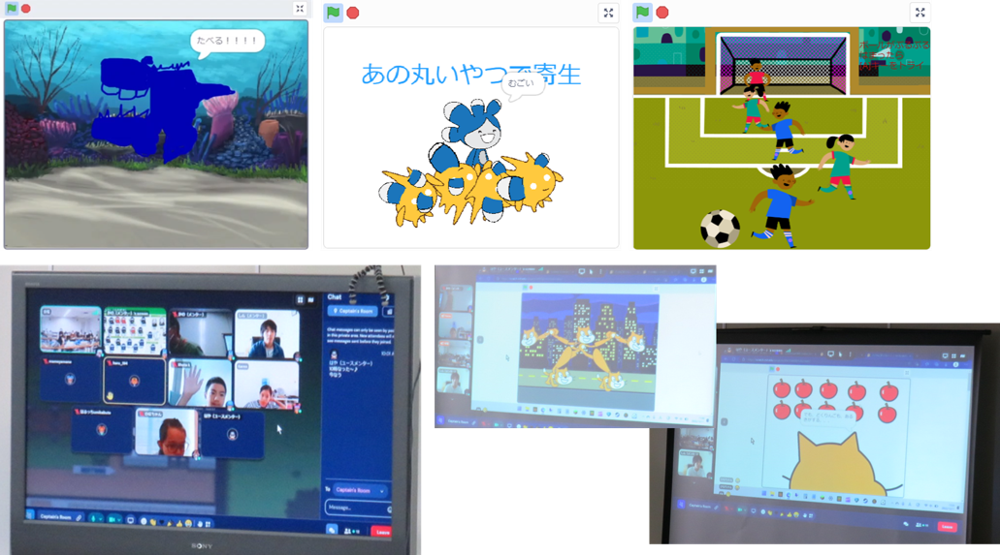

午前と午後の２回開催
第37,38回 ニンジャ23名。Scratchアニメーション と はじめてのＬチカ
午前のScratchプログラミングはみんなでアニメーション制作、オープニング画面やタイトル画面など。午後のラズパイ電子工作ではブレッドボードを使ったはじめてのＬチカを体験しました。
本日の青梅Dojo出欠確認です
参加者は午前13名・午後9名のニンジャ合計23名。ご家族は保護者・妹さん達が12名以上。メンターは5名+見学2名。総計42名。
本日のワークショップ１．Scratchプログラミング（初中級）
いつも最初は10～15分くらいのオリエンテーション。大人のプログラミングはどんな事をやっているか、プログラミングは生活のどんなところで役に立っているかなどを紹介しています。CoderDojo青梅は、いまでも会場とオンラインの同時開催。当日、会場に来られなくなっても自宅からオンライン参加もできます。
ユースメンター講師による初めてのScratchゲーム「くものアスレチック」
プログラミング未経験相当のニンジャ４名にプログラミングレクチャーしているのは小学生のハヤトくん（とコーディネートをトリさんが担当）。初めてのニンジャくんたちは親子でScratch「くものアスレチック」に挑戦です。親子での「おおー」という声がちょっと嬉しい。
大学生メンター講師によるオンラインレクチャー「猫逃げ」
オンライン組は全員ほぼ初心者でしんくんがニンジャのレベルを聞いて今日は猫逃げを選択。しんくんは海外ニュージーランドから参加してくれるとてもありがたい存在。今日は参加者の人数が多過ぎてWi-Fi接続が混みあって会場からインターネットに接続できないこと数回。そんな時、オンライン側の進行をサポートしてくれるのです。ときどき会場の様子カメラが不通になったり、たくさん心配をおかけしました。推奨接続4台のWi-Fiルーターに10台前後の接続はさすがにダメでしたね、次回はWi-Fiルーターを増設しようと思います。
午前の作品発表会
会場もオンラインも他のDojoを参考に Gather Town での発表に統一しました。オンライン側にも公平に見てもらえます。逆に会場のニンジャの声が届かないことが課題、スピーカーマイクを欲しいところ。作品はCoderDojo青梅スタジオで共有しています。

本日のワークショップ２．ラズパイ＆電子工作（はじめてのLEDチカチカ）
原則、青梅IT未来塾の卒業生（およびラズパイ希望者）が継続的に学習する場所として Linuxコマンド, python を駆使して電子部品を動作させます。今年度も新しい参加者を加えて本日は8人で通称Ｌチカを実施。教材の抵抗/LED/電源の回路図だけでブレッドボードに配線をチャレンジ。最初は厳しかったかもしれないけれど、１色目のLED単色点灯を成功したら、２色目のLED点灯はひとりで出来たね。中には３色を重ねるフルカラー配線まで出来た人もいる。そして、点灯ができると何も伝えなくても変数を使ってだんだん早くなる点滅まで改造していました。みんなが使ったプログラミング言語は「HSP3」「ラズパイ内蔵Scratch」「python」と豊富でメンターは大変(@_@)。
ラズパイ講師はCoderDojo青梅チャンピオンの「かの」です
毎月一生懸命、電子工作の事前評価とドキュメントを制作しています。IT未来塾のOSがやや古いバージョンだったのでみんなと同じ RaspberryPi OS に統一するため全員に新しいSDカード(OS入り)を配布しました。ところがみんなのキーボード英語版;;; 設定手順を確認していなかったの失敗...。次回から使おう。本日のＬチカ教材はこちら。
作品：赤・青チカチカ。フルカラーLED接続中。
作品：ラズタンク。持参したポールなど障害物をリモート操作中。
次回は1月8日(日)開催でーす。
Connpassでイベント告知するので、またの参加をお待ちしています。参加申し込みはこちらのConnpassから
青梅子どもふれあいフェスタ2022［1月15日(日)］にも出店しまーす。